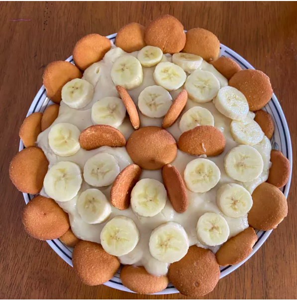

Banana Pudding

Description
Easy version of banana pudding
Ingredients
- 2 cups milk
- 1 (5 ounce) package instant vanilla pudding mix
- 14 ounces sweetened condensed milk
- 1 tablespoon vanilla extract
- 1 (12 ounce) container of frozen whipped topping (thawed)
- 1 (16 ounce) package of vanilla wafers
- 1/4 cup melted, unsalted butter
- 3 or 4 sliced bananas
Steps
- Place milk and pudding mix into a large bowl. Beat with a whisk until smooth.
- Stir in vanilla, then fold in whipped topping.
- Layer wafers, banana slices, and pudding in a separate container.
- Chill and serve.